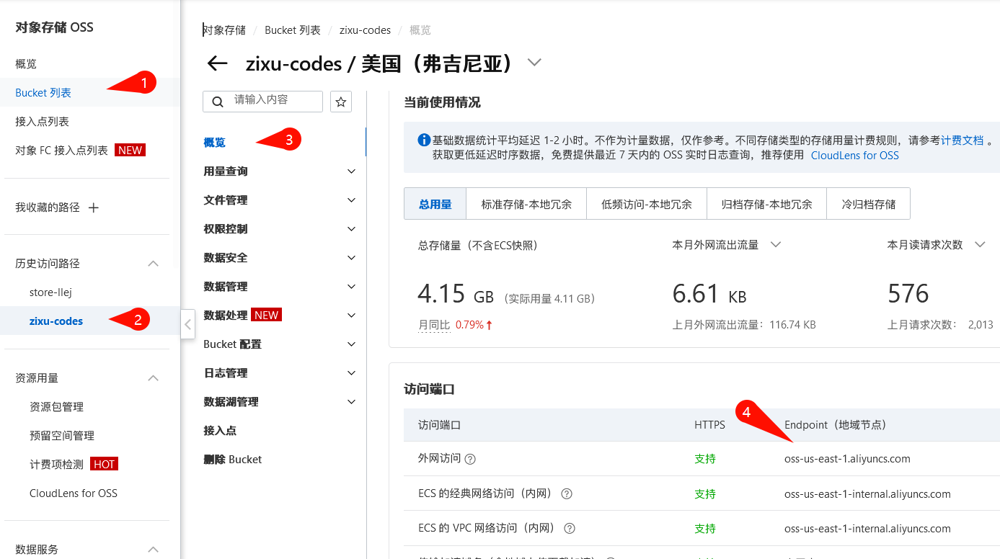
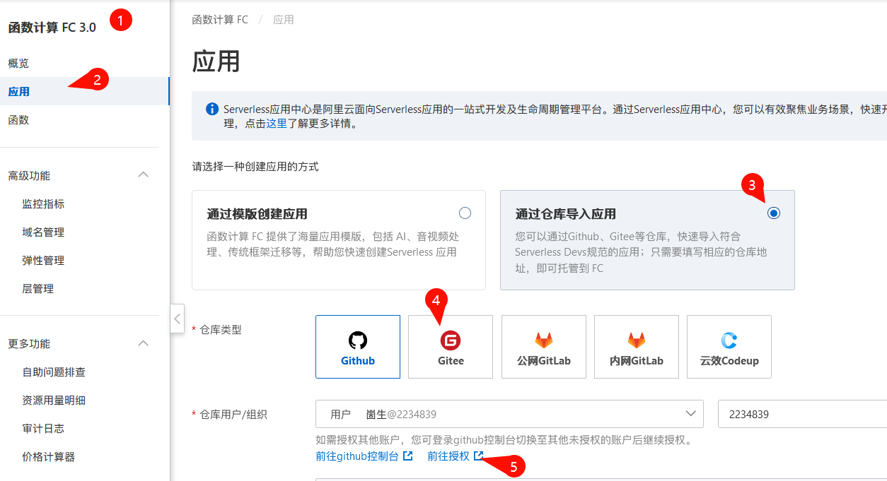
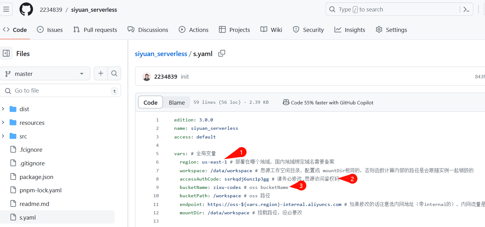
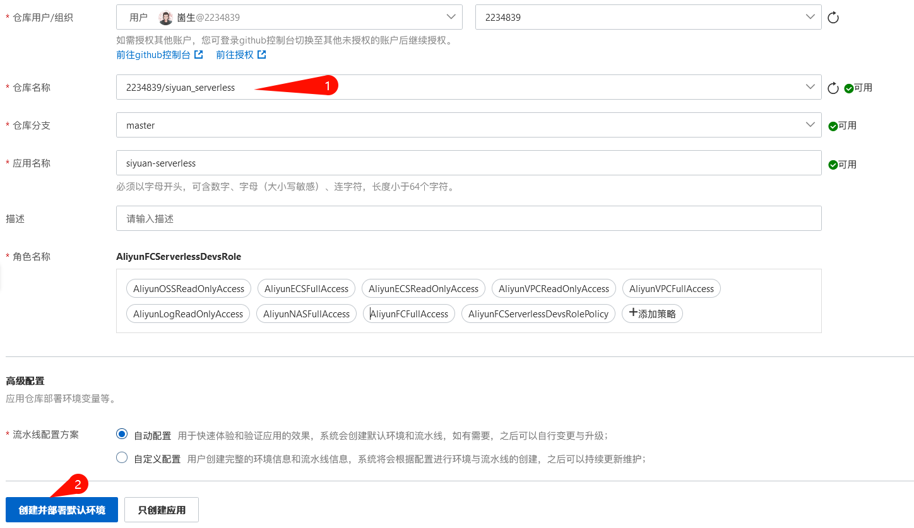
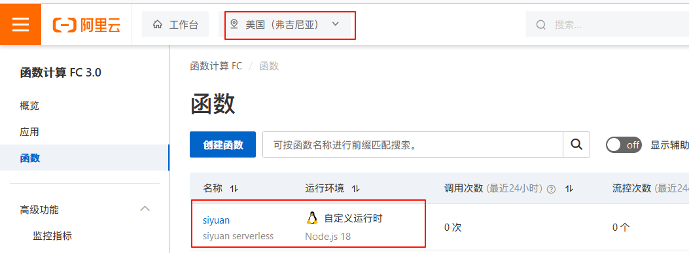
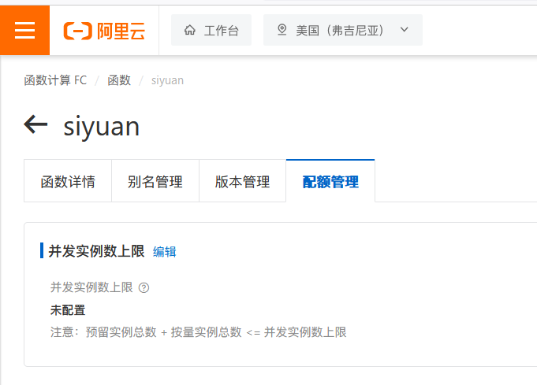
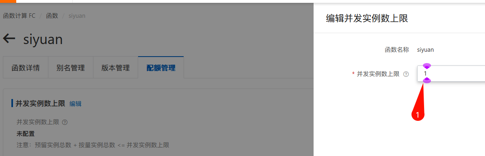

SiYuan serverless
本程序符合 serverless devs 规范，但目前支持自定义运行环境、单实例多并发、挂载 oss 、可限制只允许单实例的只有阿里云一家，所以只能部署在阿里云。
部署方式
从阿里云应用中心（推荐）
这种方式并不需要您具有编程知识，是非常简单的，只要有耐心跟着做就行了

开通oss
开通oss后请创建一个 bucket，然后按上图进入该 bucket 的概览页
注意，如果你打算绑定未备案的域名的话，不要创建地域在国内的bucket，
如果不打算绑定域名，或者有已备案的域名则无所谓
请记住你所创建的类似上图中的第二步所指向的 bucket 名称（我的是
zixu-codes
）和第四步所指示的地域节点
oss-us-east-1.aliyuncs.com
「只需要记住类似
us-east-1
即可（这个表示了我的bucket所在地域为美国-弗吉尼亚，你如果选择了其他地域会有不同的标识），开头的
oss-
和后面的
.aliyuncs.com
不需要」，之后的步骤要用
接下来你需要有一个 github 账号，或者 gitee 账号

然后 fork 我的仓库
gitee ：我本来想创建一个 gitee 仓库给无法使用魔法的人用的，但我的电脑上 gitee.com 有问题，他要我绑定手机号，但我打不开绑定手机号的界面。如果有谁在 gitee 上fork成功了公开的
siyuan_serverless
请联系我，我将你的仓库地址放在这

修改根目录下的 s.yaml 中如上图的三处，其中 region 和 bucketName 即是之前要你记住的那两个。
然后如下图选中你的仓库，点击部署

如上图选中你的仓库，部署成功后再进入函数计算的函数页当能看到（注意上面红框的地域）

进入该函数详情页的配额管理，设置并发实例数上限为 1（这是必须的！思源内核是单体应用，多实例同时运行会出现互相覆盖写文件等情况）


然后如果你拥有域名的话，绑定域名就可以访问了。
使用 serverless-devs/s3
配置阿里云
下载代码，修改 s.yaml
sh
npm install @serverless-devs/s3 -g
s add config # 配置密钥
s deploy -y # 部署